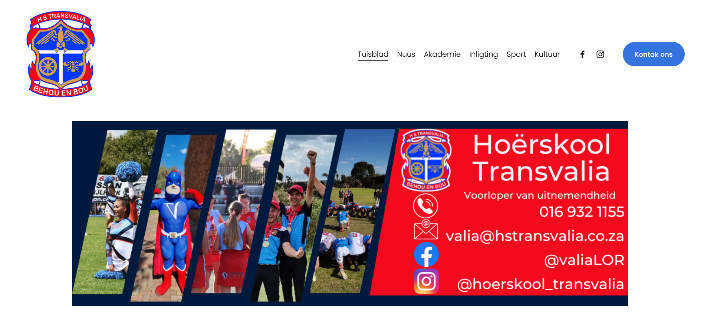
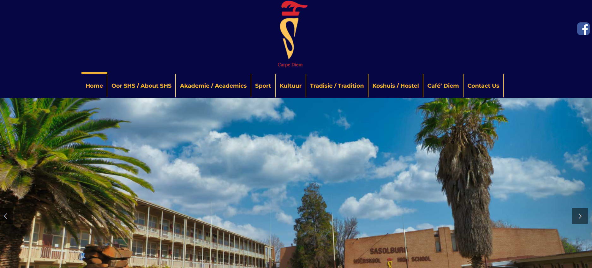
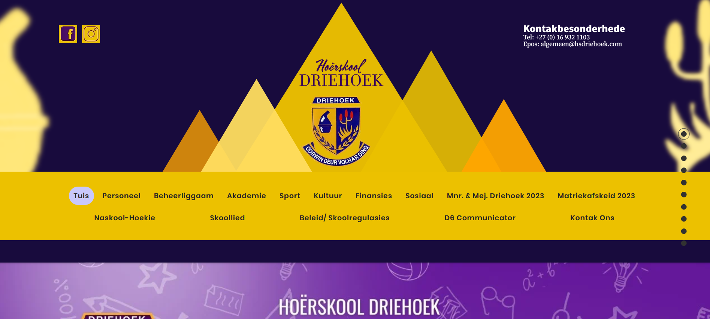
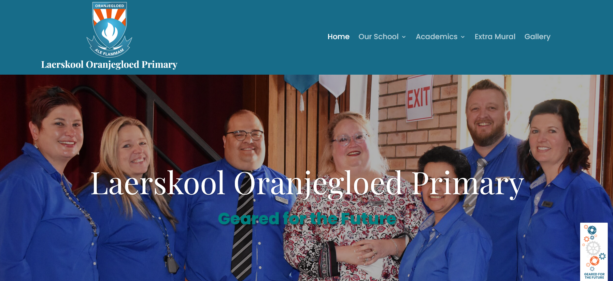
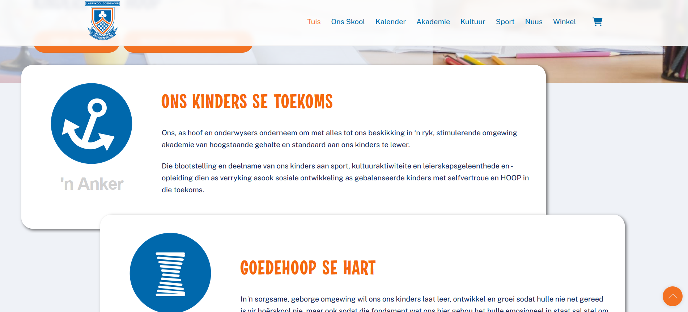

So, in looking for websites to analyze, I wasn't sure how to approach looking for a South African Websites that would be interesting for me to look at and analyze. But then I remembered, the high school I was in had a website. And I am sure that other high schools also have websites. I thought it might be interesting to look at how accessible and usable these websites are.
Websites  Pros:A user can access everything that is needed, or at least everything that they would want to access based on what is available on the website.
Cons:I am sad to say, there is a lot. Majority of the website is a white page with some black text. The pieces that have colour is the buttons and the unhinged amount of images used on the website. The homepage is full of just images of some letters and some information about the school. The user has to scroll forever to reach the bottom of the page and when they want to go to a different part of the website they have to scroll all the way back up, because there is no way to access the navigation that is at the top of the page without having to scroll back up. It is hard to see what they find to be important, because the information given is just written in some black text on a bright white background. The navigation in general is just also mostly hard to find. The website is also not updated with recent events and information, except on one or two places.
 Pros:The home page has some highlights posted on it and each of these highlights have a link to extra information. None of the pages are overly full, so even though yo need to scroll back up to get to the navigation, you do not need to scroll very far. Every navigational element is written in both English and Afrikaans, which is great because there are Afrikaans and English students that go there.
Cons:Some of the text feel like big text walls that can be hard to get through. The main text is also just written in english which feels disjointed from the fact that the navigational tools are in Afrikaans and English. I would have just stayed with English then. Like I mentioned in the pros, you need to scroll up for the navigational tools, but that is not that much of an issue because the pages are not that full.
 Pros:Everything is very clearly laid out and can be quickly accessed because the user can see each section very easily. The navigational tools are not always visible, but this is remedied becaue you can reach them with one click that then takes you back up to the top. The colours of the text and the background contrast enough so that everything is very easily viewed, and none of the colours that overlap seem to blend into each other.
Cons:The colour scheme is a bit hard to look at, but I cannot fault them for that all too much because the purple, yellow and brown are the colours of their school. (I went back to look at this website, they have changed it since I did this post originally)
 Pros:The website is sectioned very well, making the important pieces very obvious and easy to see. It is also very sleek and pleasing to look at. Every page is formatted in such a way that the information is given in bite sized amounts that are easy to digest. Any information a parent would need of a school is very easily found and accessible. The navigation is always accessible because of the arrow on the side that takes you back up to the top of the page so you can access the navigation.
Cons:The colours are really pretty, but they do not all contrast with each other, so it is hard to see the words in some of the places text is used.
 Pros:This was quite a pleasing website to look at. The colour scheme is more subtle, but it is contrasting enough so everything is easy to read and see. Everything is also quite reactive. Many of the sections that you scroll past have a small animation that pulls your attention towards it. The text is not long and quite snappy, but it gives you all the information that you need. The navigation bar is accessible at all times and the page also has an arrow on the side that takes you up to the top of the page.
Cons:I was struggling to find something that bothered me all that much.